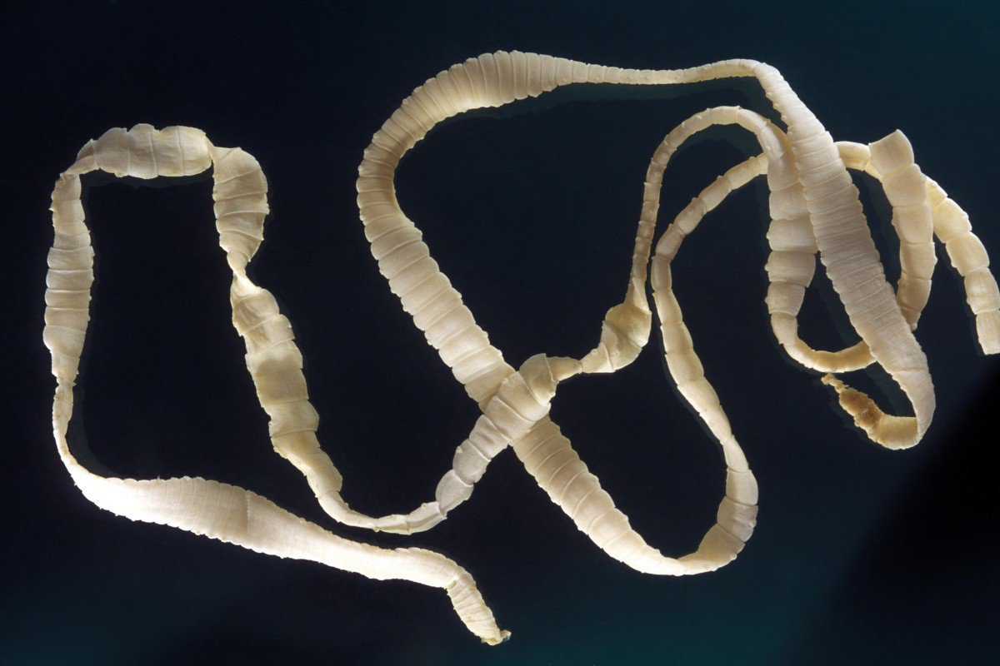

Ћенточные черви
Ћенточные черви бывают всех форм и размеров.
— более чем 1000 видами ленточных червей, большинство из которых находитс€ в океане, существует огромный диапазон размеров и образа жизни среди различных типов.
ќпредел€ющей характеристикой ленточных червей €вл€етс€ наличие хоботка ? уникальной мускульной структуры внутри тела черв€.
рупнейший вид ленточного черв€ ? это Lineus longissimus, которого можно найти в водах —еверного мор€.
Ќаименьший вид ленточного черв€ ? менее одного сантиметра, и он более похож на кусок нити, чем на то, что мы считаем червем.
ак вторую линию защиты, многие ленточные черви используют €д, который может вызвать паралич и смерть жертвы.
Ќе все ленточные черви €вл€ютс€ хищниками, некоторые из них паразиты.
ћногие ленточные черви могут восстанавливатьс€ после укуса хищника, исцел€€ свои раненые части.

¬ернутьс€ назад